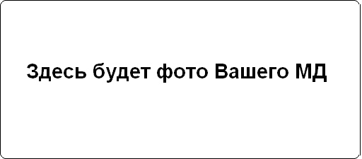

Принцип работы МД Малыш FM2
МД Малыш FM2 собран на программируемом PIC-контроллере. База данного металлоискателя отлично подходит для реализации подводного металлоискателя
Технические характеристики МД Малыш FM2:
- Потребляемый ток 20 мА
- Напряжение питания 3,5-9 вольт
- Дискриминация есть (свктовая и звуковая)
- Чувствительность монета 25 миллиметров — 10 см